AUSSENWIRTSCHAFT AUSTRIA · Zukunftsreise Beyond Automation · Teil 1 von 2
Korea: Seoul, Daegu, Pangyo
Fr 27. November bis Mi 2. Dezember 2026 · Anreise über München · Programm ab So 29.11. abends
Offene Punkte
Haken bleiben im Browser gespeichert.
Zeitplan
Zeiten in Ortszeit. Korea und Japan liegen acht Stunden vor Wien (MEZ + 8). Grundlage: AC-Programm, Stand 19.11.2026. Kurzfristige Änderungen kommen über die WhatsApp-Gruppe.
fix · AWO vom AußenwirtschaftsCenter organisiert
selbst Flüge und Anreise auf eigene Rechnung
Transfer Weg zwischen zwei Punkten
optional Vorschlag, noch nicht entschieden
Foto-Motiv Aufnahme für deine Vorträge
?Auftritt Bühne noch nicht fix, Anfrage offen
Jetlag Licht, Schlaf und Melatonin gegen die acht Stunden
Fr 27.11.2026Anreise · St. Johann, München, Nachtflug
seit Di 24.11.
JetlagVorlauf daheim: jeden Tag eine Stunde früher
Drei Abende vor dem Flug je eine Stunde früher ins Bett und früher auf — Di 24.11. Wecker 04:00, Mi 25.11. 03:30, Do 26.11. 03:00. Morgens sofort helles Licht, abends ab 19:00 gedämpft. Damit nimmst du zwei bis drei der acht Stunden vorweg.
AnsatzDer wirksamste Hebel überhaupt — stärker als alles, was an Bord passiert.
seit Mi 25.11.
JetlagKoffeinpause, damit Kaffee in Korea wieder wirkt
Entzug: Kopfweh und Müdigkeit vor allem an Tag 1 und 2, also Do und Fr. Sanfter: eine kleine Tasse grüner Tee am Morgen statt null.
Wach werden ohne Koffein:
gleich nach dem Aufstehen helles Licht, draußen oder Tageslichtlampe
10 Minuten zügig gehen oder Treppen
kalt duschen oder kaltes Wasser ins Gesicht
ein großes Glas Wasser sofort
Frühstück mit Eiweiß (Eier, Joghurt) statt Süßem
Gegen Kopfweh: viel trinken, etwas Salz, bei Bedarf Paracetamol oder Ibuprofen.
AnsatzSchon vier Tage Pause machen den ersten Kaffee in Seoul spürbar wirksamer.
10:2713:152:48 h
TransferZug: St. Johann → Flughafen München
10:27 ab St. Johann in Tirol, Bahnsteig 2, IR 610 Richtung Innsbruck
11:09 an Wörgl Hbf, Bahnsteig 5 → 11:16 ab Bahnsteig 3, RJ 286 (Railjet) Richtung München Hbf
12:24 an München Ost, Bahnsteig 6 → 12:42 ab Bahnsteig 5, S8 Richtung Flughafen
13:15 an München Flughafen Terminal, Bahnsteig 2. Rolltreppe hoch ins MAC-Forum, zu Fuß rund 5 Minuten bis Terminal 2.
Ansatz2:48 Stunden, zwei Umstiege, je 7 und 18 Minuten. Puffer bis Schluss der Gepäckabgabe (15:05): 1:50 Stunden.
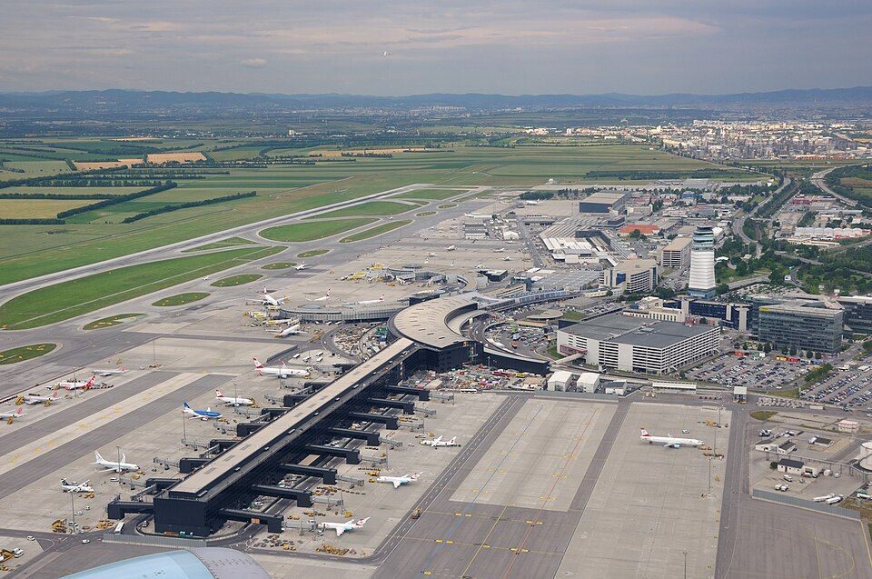
Abflug ab München
13:3015:051:35 h
Check-inGepäckabgabe LH 718 und Kontrollen
München Terminal 2. Die Gepäckabgabe schließt 15:05, 60 Minuten vor Abflug. Danach Sicherheits- und Passkontrolle Richtung Non-Schengen.
AnsatzOnline-Check-in öffnet 23 Stunden vorher, also Do 26.11. ab 17:05 — die Lufthansa-App erinnert dich.
15:2015:45
BoardingBoarding LH 718
Boarding ab 15:20, das Gate schließt 15:45, 20 Minuten vor Abflug. Gate-Nummer erst am Abflugtag in der App.
16:0511:15+1Landung 03:15 Wien11:10 h
selbstLH718 München (MUC) → Seoul-Incheon (ICN) · Business
Nachtflug, 11:10 Stunden, nonstop. Gebucht am 11.09. gemeinsam mit dem Rückflug LH 715, zusammen 2.227,24 Euro.
AnsatzNicht stornierbar, Umbuchung 300 Euro.
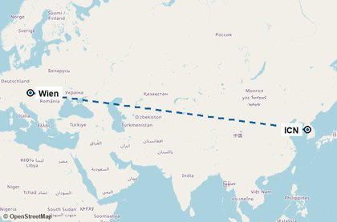
Route nach Seoul
an Bord
JetlagUhr auf Seoul stellen, schlafen, kein Alkohol
Nach dem ersten Service schlafen, Augenmaske und Ohrstöpsel. Kein Alkohol, er zerschlägt den Tiefschlaf. Auch kein Kaffee an Bord. Die letzten drei Stunden vor der Landung wach bleiben und hell machen.
AnsatzBusiness heißt hier: sechs bis sieben Stunden echter Schlaf statt Dösen.
Sa 28.11.2026Seoul · Zusatztag, selbst finanziert
Test
JetlagCLOUD-TEST 04:06
Testeintrag aus Cloud-Session, wird wieder entfernt.
bis 11:00
JetlagVormittags Licht meiden — die Lichtregel ist an Tag 1 umgekehrt
Weil du um 05:00 aufstehst, liegt dein Körpertief bei etwa 03:00 Wiener Zeit, in Seoul also gegen 11:00. Licht davor dreht die innere Uhr in die falsche Richtung: Sonnenbrille vom Flughafen bis in die Stadt, ab 11:00 bewusst ins Tageslicht.
AnsatzDie Grenze rückt täglich rund eine Stunde vor: Sonntag ab 10:00, Montag ab 09:00, danach normal.
11:1503:15 Wien
selbstAnkunft Incheon (ICN)
Kein Transfer des Veranstalters. Kein Visum und keine K-ETA — Österreich ist bis 90 Tage visumfrei und von der K-ETA bis 31.12.2026 befreit. Pflicht ist nur die e-Arrival Card (online in den 72 Stunden vor der Ankunft, sonst auf Papier im Flugzeug).
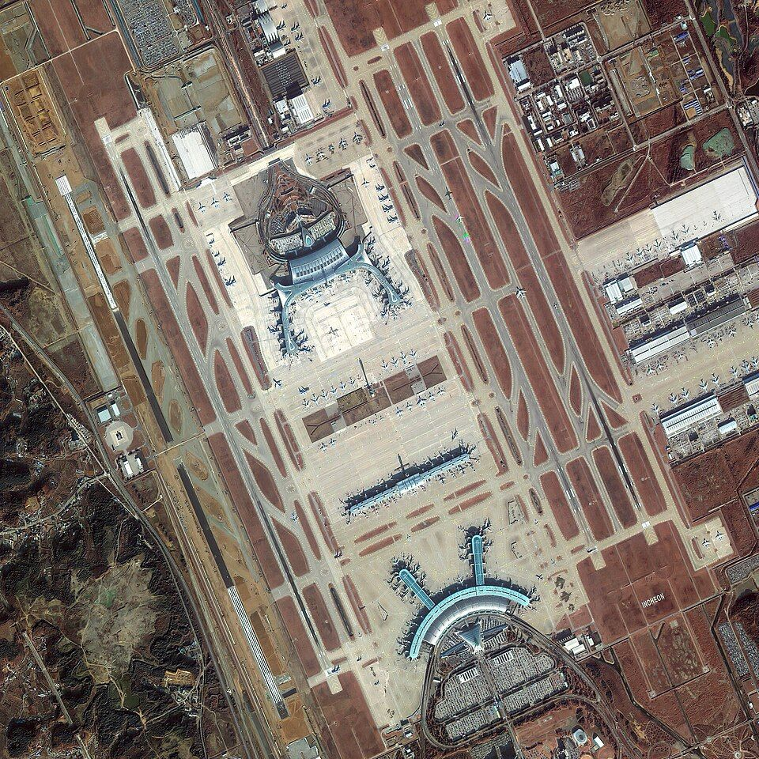
Incheon International
ab 11:15
JetlagErster Kaffee seit Mittwoch
Nach der Landung, wenn das Körpertief gegen 11:00 vorbei ist. Nach der Pause reicht eine Tasse, um bis zum Abend wach zu bleiben. Letzter Kaffee heute 14:00.
12:1513:401:25 h
TransferLimousinenbus 6002 Incheon → Jongno 1-ga
Ticket: 17.000 Won am Busschalter in T1 (drinnen neben Ausgang 4 oder 9, draußen an den Ausgängen 4–13) oder am Automaten. Mit Ticket steigst du vor den Barzahlern ein.
Bezahlen: Ob ausländische Kreditkarten am Schalter gehen, ist nicht belegt. Im Bus nur Bargeld oder T-money (aufladbare Verkehrskarte, am Flughafen in GS25/CU oder am Automaten, Aufladen meist nur bar), keine Kreditkarte. Deshalb 17.000 Won bar bereithalten.
Haltestelle: Ankunftsebene T1 (1. Stock), durch Ausgang 6 hinaus, Bussteig 6 (laut Drittquelle 6A, neben dem Ticketkiosk), Schild „6002“. Den Koffer lädt der Fahrer ein.
Takt: samstags alle 13–14 Minuten, z. B. 12:21, 12:35, 12:49, 13:02.
Fahrt: geschätzt 70–90 Minuten am Samstag. Offiziell ist nur die Nachtfahrt angegeben: 60 Minuten.
Aussteigen: „Jongno 1-ga“ (종로1가), auf der Mittelinsel des Jongno bei Gran Seoul und Jonggak, gleich nach „Gwanghwamun (Four Seasons)“. Den Stopp-Knopf selbst drücken. Nicht bei „Shilla Stay“ aussteigen, das ist Shilla Stay Seodaemun.
Zum Hotel: rund 500 m, 7 Minuten nach Norden: Jongno 3-gil hinauf, dann rechts in den Sambong-ro. Das AußenwirtschaftsCenter im Kyobo Building liegt 180 m westlich der Haltestelle.
Risiken:
Samstags oft Demonstrationen am Gwanghwamun, dann wird umgeleitet.
Terminal T1 für Lufthansa sehr wahrscheinlich, für den 28.11. nicht bestätigt: auf der Bordkarte prüfen.
Alternativen:
Taxi: Taxistand vor der Ankunftshalle T1, Fahrt 60–90 Minuten, rund 70.000–90.000 Won (etwa 45–60 Euro, Maut extra oder pauschal), Deluxe-Taxi (schwarz) 90.000–120.000 Won. Kreditkarte wird in Taxis meist akzeptiert. Stau-Risiko.
AREX bis Seoul Station, 43 Minuten.
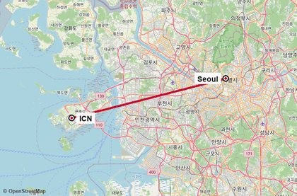
Flughafen in die Stadt
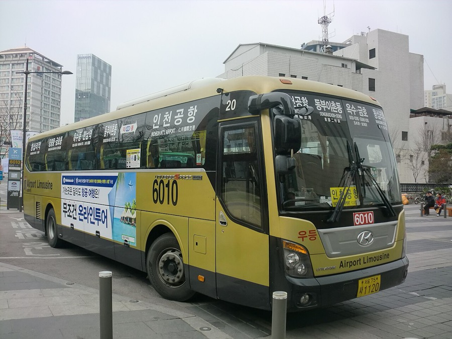
Airport-Limousine im gold-schwarzen Design (Linie 6010), 6002 sieht gleich aus
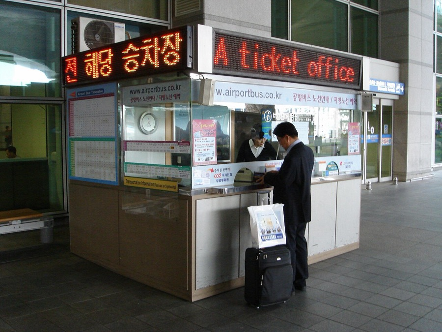
Busschalter vor der Ankunftshalle T1 (Archivfoto 2007)
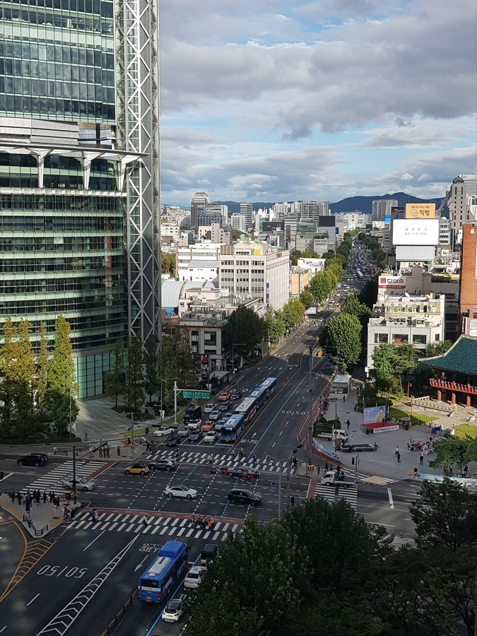
Kreuzung Jongno 1-ga von oben, rechts der Glockenpavillon Bosingak
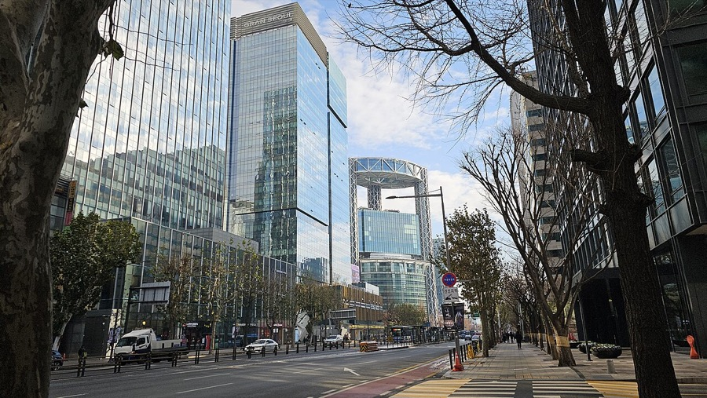
Jongno an der Haltestelle: links Gran Seoul, hinten Jongno Tower
13:4514:00
selbstShilla Stay Gwanghwamun: Gepäck abgeben
71 Sambong-ro, Jongno-gu (신라스테이 광화문, 서울특별시 종로구 삼봉로 71). Über den AC gebucht: Deluxe Double, 28.11.–02.12., mit Frühstück, Zahlung vor Ort. Check-in ab 15:00, Check-out bis 12:00 — früher Check-in nur nach Verfügbarkeit.
14:0015:001:00 h
Foto-MotivGS25 Ground Blue 49, Insadong
Im offiziellen Programm als Tipp: 49 Insadong-gil, 2. Stock im Komplex Anyoung Insadong, seit August 2024. Roboter machen Pizza, Kaffee und Eis. Rund 300 Meter vom Hotel, fünf Minuten zu Fuß.
AnsatzDein Bild für „Automatisierung ist längst im Alltag“ — direkt neben 600 Jahre alten Hofhäusern, stärkster Kontrast der Reise. 30 Sekunden Video reichen.
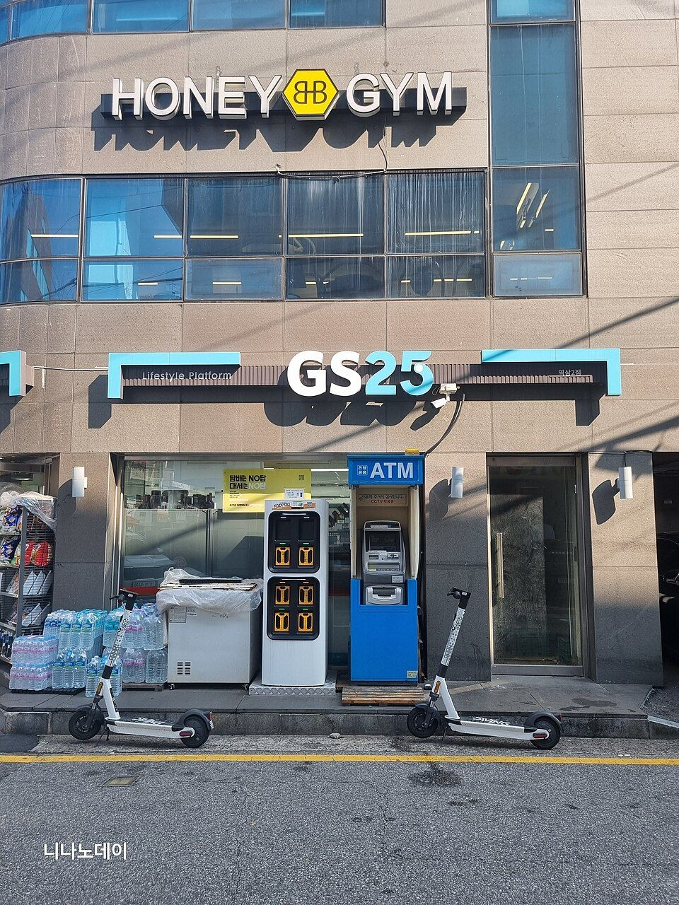
GS25, automatisierte Filiale
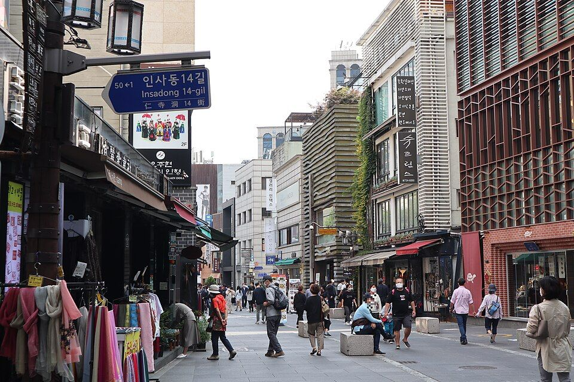
Insadong
15:0015:300:30 h
selbstCheck-in Shilla Stay
Zimmer beziehen, kurz frisch machen — nicht hinlegen.
15:3017:151:45 h
optionalBukchon Hanok Village
Traditionelle Hofhäuser zwischen den Palästen, vom AC empfohlen. Sonnenuntergang 17:14 — danach wird es um 0 °C kalt.
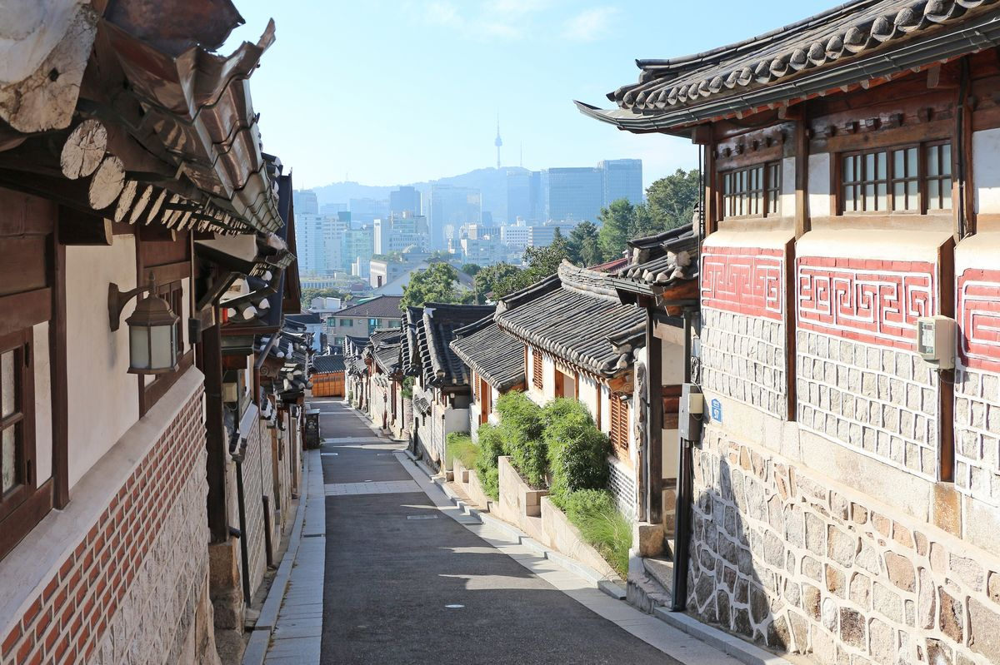
Bukchon Hanok Village
abends
optionalGwangjang-Markt oder Jjimjilbang
Garküchen mit Bindaetteok und Gimbap, oder koreanisches Badehaus gegen die acht Stunden Zeitverschiebung.
AnsatzIm Jjimjilbang gilt Filmverbot. Als Anekdote trotzdem gut.
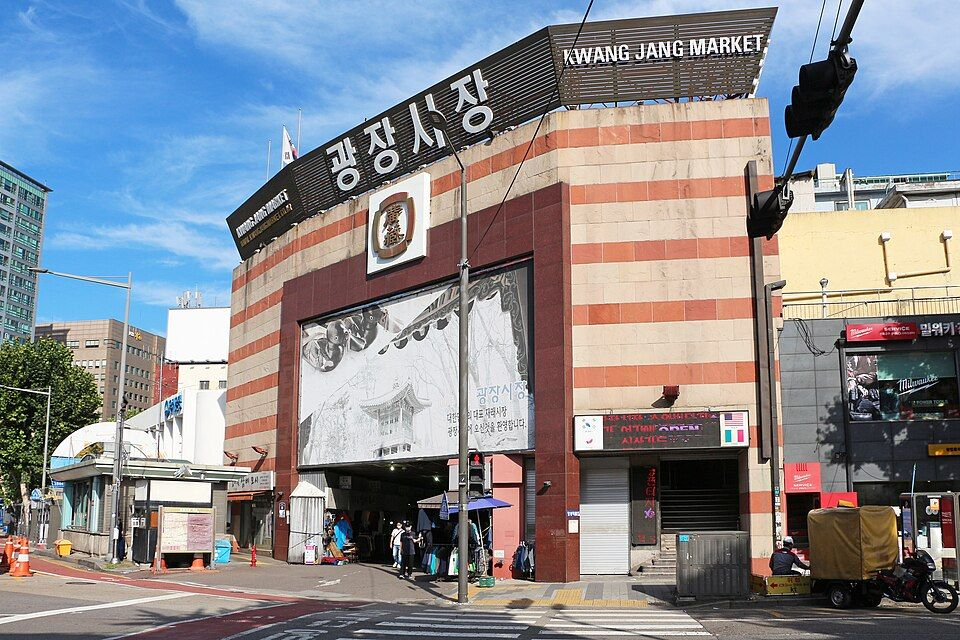
Gwangjang-Markt
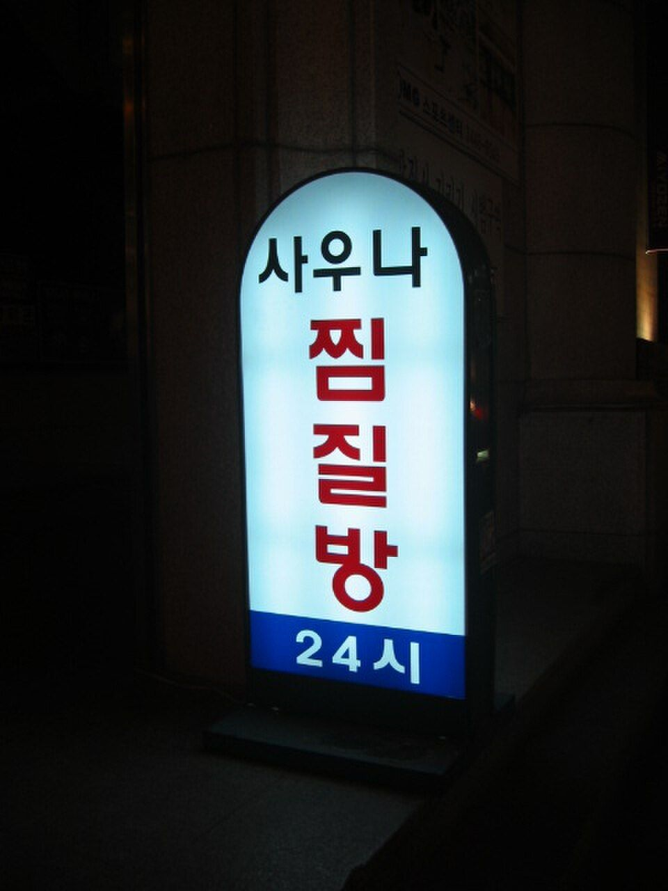
Jjimjilbang
4:15 h
4:15 h frei zwischen 17:15 und 21:30
21:30
JetlagMelatonin 0,5–1 mg, Zimmer abdunkeln
Schnell freisetzend, zur lokalen Schlafenszeit, höchstens fünf Nächte. Mehr als 1 mg bringt nichts.
AnsatzSpätestens 23:00 Licht aus. Montag geht es um 07:10 los.
So 29.11.2026Seoul · Programmstart am Abend
ab 10:00
JetlagTageslicht tanken, Koffein nur bis mittags
Ab 10:00 wirkt Licht in die richtige Richtung — mindestens eine Stunde draußen, am besten zu Fuß. Letzter Kaffee 12:00 Ortszeit.
AnsatzMittagsschlaf höchstens 20 Minuten und nie nach 15:00.
vormittags
optionalGyeongbokgung, Wachablöse
Größter der Königspaläste, zehn Gehminuten vom Hotel, vom AC empfohlen. Dienstags geschlossen, sonntags offen.
AnsatzB-Roll für den Gegenschnitt zu den Robotern am Montag.
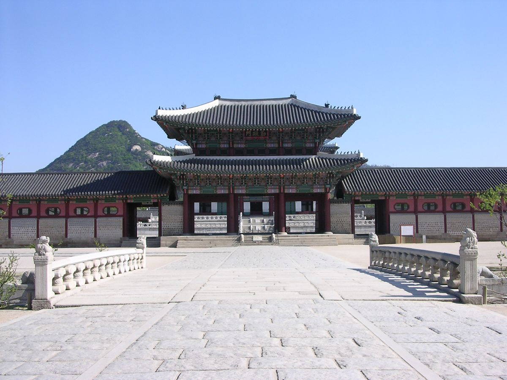
Gyeongbokgung
nachmittags
Foto-MotivDemografie zum Anfassen
Seoul-U-Bahn, Hundesalons und Hundekinderwagen in Gangnam, leere Schulhöfe. Alternativ Myeongdong mit Kosmetikläden wie Olive Young, vom AC empfohlen.
AnsatzBisher zeigst du nur die Fertilitätsrate auf der Folie. Ein Bild sagt hier mehr.
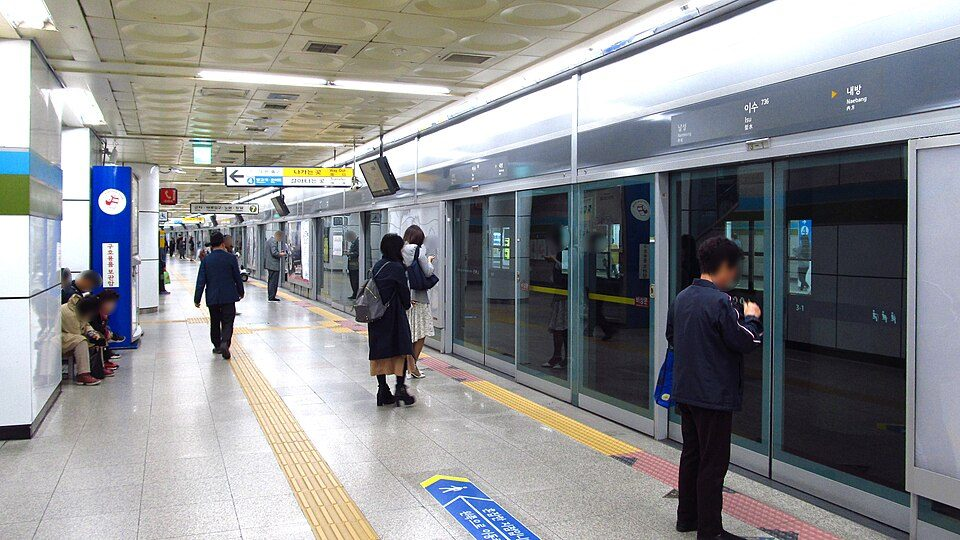
Seoul, U-Bahn-Station Isu
17:4018:00
TransferBus Hotel → Samcheong-ro
1,9 Kilometer, zehn bis 15 Minuten. Treffpunkt Hotellobby. Kältester Abend der Woche, bis −3 °C.
18:0020:002:00 h
fix · AWOAbendessen und Briefing, Wirtschaftsdelegierter Wolfgang Köstinger
Maple Tree House Samcheong (단풍나무집 삼청점), 130 Samcheong-ro — koreanisches Grillrestaurant mit Gartenterrasse am Rand von Bukchon, bekannt für gereiftes Hanwoo-Rind. Willkommen und Programmbriefing durch Mag. Wolfgang Köstinger.
AnsatzErste Gelegenheit, Fotofreigaben für die Werksbesuche anzusprechen — und den Kurzimpuls am Dienstag.
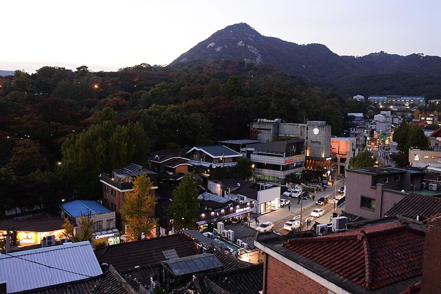
Samcheong-dong in der Abenddämmerung
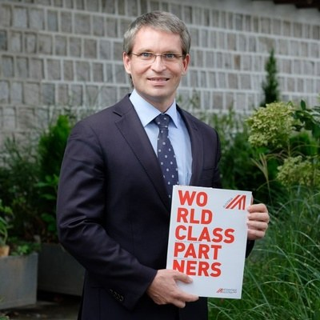
Wolfgang Köstinger, Wirtschaftsdelegierter Seoul
20:0020:15
TransferBus zurück zum Hotel
Früh schlafen: Montag 07:10 Abfahrt.
Mo 30.11.2026Daegu · KIRIA und HD Hyundai Robotics, mit dem KTX
07:1007:400:30 h
TransferBus Hotel → Seoul Station
07:10 Ortszeit sind 23:10 in Wien. Frühstückszeit im Hotel am Vorabend erfragen.
07:5009:311:41 h
TransferKTX Seoul → Dongdaegu
Im Programm als KTX 015, Abfahrt 07:50 Seoul Station (서울역). Ziel ist Dongdaegu, nicht Seodaegu: Ankunft 09:31, 1:41 Stunden. Manche Fahrplanseiten führen den Zug unter anderer Nummer — maßgeblich ist die Uhrzeit.
AnsatzIm Zug schlafen. Der Tag endet erst 17:28 wieder in Seoul.
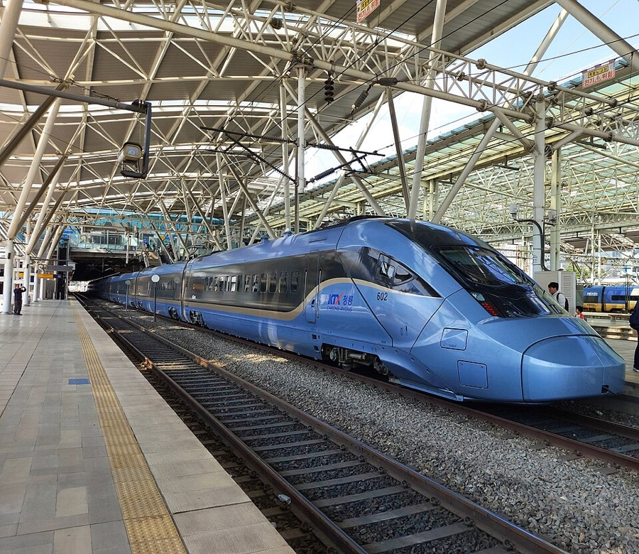
KTX-Cheongryong am Bahnhof Seoul
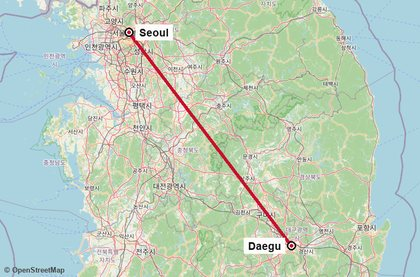
Seoul – Daegu
09:3510:00
TransferBus Dongdaegu → KIRIA
7 Kilometer, 20 bis 25 Minuten. Start um 10:00 wird knapp, eher 10:10.
10:0011:301:30 h
fix · AWOKorea Institute for Robot Industry Advancement (KIRIA)
77 Nowon-ro, Buk-gu, Daegu. Staatliche Agentur des Industrieministeriums, 2010 gegründet auf Basis des Roboterförder-Gesetzes von 2008. Expert-Talk zu Ökosystem, Markteinführung, Fachkräften und Start-up-Förderung. Aktuell:
erstes koreanisches Pilotprogramm für Humanoide in Fabriken (zweibeinige IGRIS-C von Robros)
seit Mai 2026 eigenes Humanoid-Zentrum und nationales Roboter-Testfeld
November 2026: Vereinbarung mit LG zur Sicherheitszertifizierung von Humanoiden
Korea hat laut IFR (12.11.2026) die höchste Roboterdichte der Welt: 1.066 Industrieroboter je 10.000 Beschäftigte — Deutschland 469, Japan 452, Weltschnitt 152.
AnsatzSeit 2023 betreibt KIRIA eine Online-Plattform, über die Firmen Tests und Zertifizierungen beantragen. Frag, wie viele sie nutzen und was am häufigsten gesucht wird — eine Zahl, die sonst niemand auf der Bühne hat.
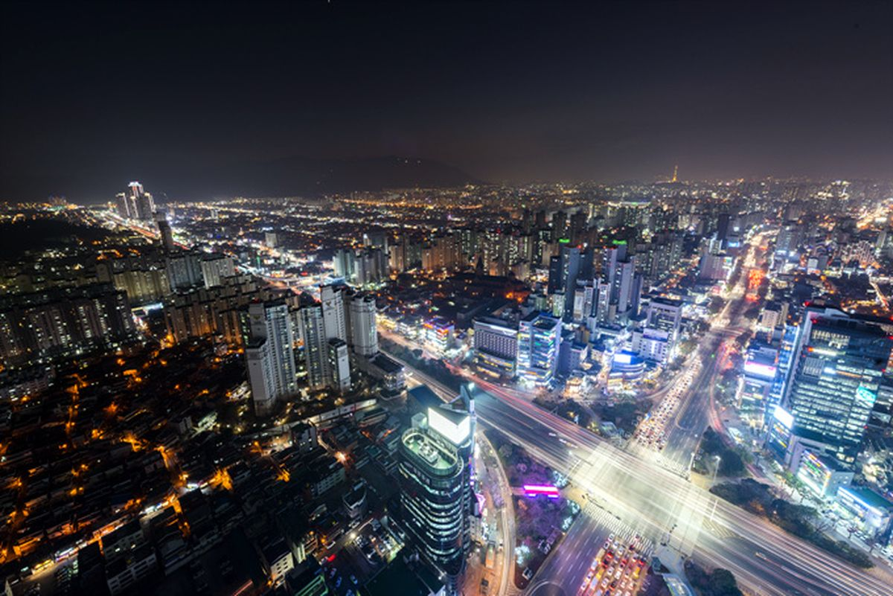
Daegu, Sitz der Agentur
0:30 h
0:30 h frei zwischen 11:30 und 12:00
12:0013:001:00 h
fix · AWOTransfer und Mittagessen
34 Kilometer bis Dalseong, 35 bis 45 Minuten Fahrt — mit Mittagessen ist 13:15 knapp.
13:1514:451:30 h
fix · AWOHD Hyundai Robotics, Zentrale und Showroom
50 Techno sunhwan-ro 3-gil, Yuga-eup, Dalseong-gun. Koreas größter Industrieroboterbauer: seit 1984 Roboterabteilung von Hyundai Heavy Industries, seit 2020 eigenständig, rund 82 Prozent gehören HD Hyundai. Rund 4.000 Roboter im Jahr, die Smart Factory in Daegu ist auf 10.000 ausgelegt. Im Showroom: Schweiß-, Montage- und Handlingroboter für Auto-, Elektronik- und Schiffbau; neu ein intelligenter Zweiarmroboter als Schritt zum Humanoiden. Börsengang in Vorbereitung.
AnsatzHD Hyundai ist der Werft- und Schwerindustriekonzern — nicht die Hyundai Motor Group, der Boston Dynamics mit dem Atlas gehört. Nicht auf der Bühne verwechseln.
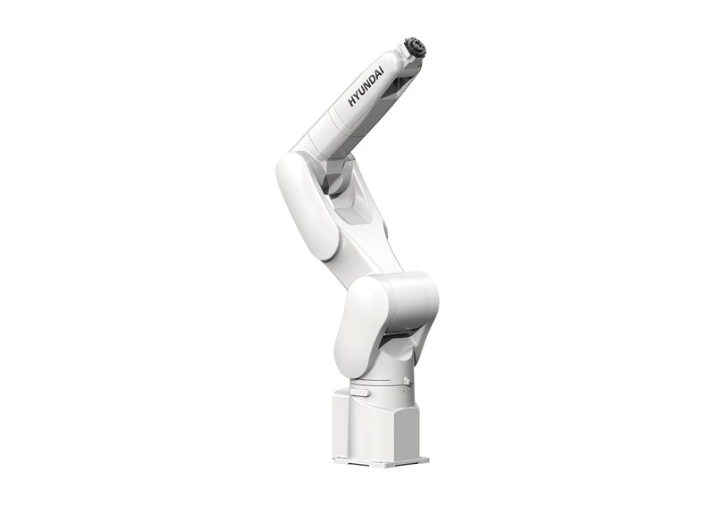
HD Hyundai HH7 · Herstellerbild
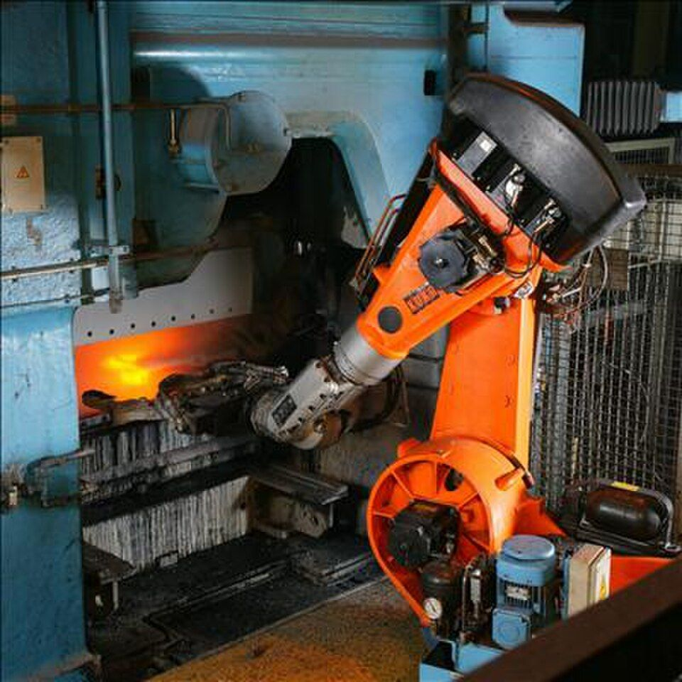
Fertigungszelle
14:4515:300:45 h
TransferBus → Seodaegu Station
28 Kilometer, 35 bis 40 Minuten.
15:4517:281:43 h
TransferKTX Seodaegu → Seoul Station
Im Programm als KTX 046, Abfahrt 15:45 Seodaegu (서대구역), Ankunft 17:28 Seoul Station. Danach Bus zum Hotel.
Rückweg nach Seoul
abends
optionalAbend zur freien Verfügung
Laut Prognose 5 bis 14 °C, Nieselgefahr. Früh schlafen — Dienstag ist der längste Tag.
Di 01.12.2026Pangyo, Yongsan, Gangnam · Hanwha, KAR, Neuromeka, ABC-Empfang
09:0010:301:30 h
TransferBus Seoul → Pangyo, Seongnam
24 Kilometer ins Techno Valley südlich von Seoul, im Berufsverkehr 50 bis 70 Minuten.
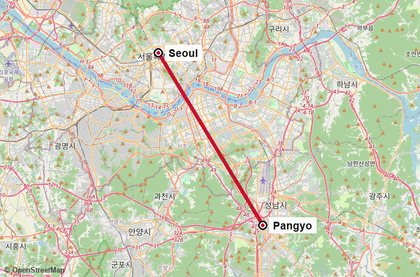
Seoul – Pangyo
10:3012:001:30 h
fix · AWOHanwha Robotics
323 Pangyo-ro, Bundang-gu, Seongnam-si. Seit Oktober 2023 eigene Firma im Hanwha-Konzern, heute unter der Holding Hanwha Machinery & Service. Die HCR-Serie war 2017 der erste Cobot einer koreanischen Firma; dazu fahrerlose Transportfahrzeuge (AGV) und mobile Roboter (AMR) für Fabrik, Logistik und Service.
AnsatzCobots in Gastronomie und Service sind Fachkräftemangel zum Anfassen, nicht Fabrikromantik. Abends geht es ins Dreamplus — das gehört ebenfalls zu Hanwha.
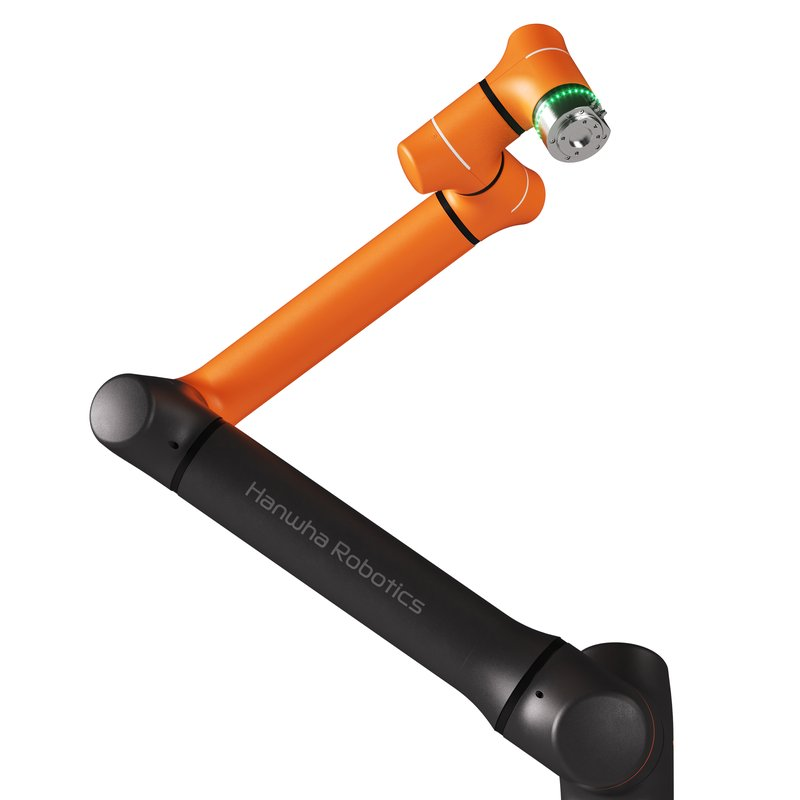
Hanwha HCR-14 · Herstellerbild
12:0013:001:00 h
fix · AWOTransfer und Mittagessen
25 Kilometer nach Yongsan, mittags 40 bis 50 Minuten — mit Mittagessen in einer Stunde sehr knapp.
13:0015:002:00 h
fix · AWONeuromeka und Expert Session beim Robotikverband KAR
8. Stock, KY Building, 31 Hangang-daero, Yongsan-gu, am Nordende der Hangang-Brücke. Das Programm schreibt „Korea Institute of AI Robot Industry“ — gemeint ist der Verband KAR, seit September 2025 Korea Association of AI Robot Industry (vorher Korea Association of Robot Industry): 1999 gegründet, 376 Mitgliedsfirmen, Präsident seit Februar 2026 ist Dr. Oh Jun-ho, Samsungs Leiter für Zukunftsrobotik. Neuromeka stellt sich hier vor, sitzt aber selbst in Seongsu: 2013 an der POSTECH gegründet, seit 2022 an der KOSDAQ. Produkte:
Indy-Cobots
Deltaroboter und Mobilroboter Moby
Humanoid-Plattformen ZEN, NAMY und EIR (CES 2026)
AnsatzOh Jun-ho gilt als Vater des KAIST-Humanoiden HUBO — frag ihn, wann der erste koreanische Humanoid in Serie in einer Fabrik steht.
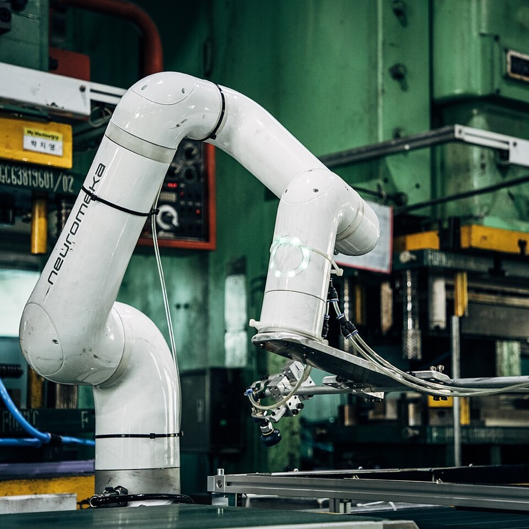
Neuromeka-Cobot Indy an einer Pressenlinie
15:0016:001:00 h
TransferBus Yongsan → Hotel
7 Kilometer, 20 bis 30 Minuten.
16:0017:001:00 h
fix · AWOFrischmachen vor dem Abendempfang
Laut Programm eine Stunde im Hotel.
17:0018:001:00 h
TransferBus Hotel → Gangnam
11 Kilometer, um 17:00 rund 35 bis 50 Minuten.
18:0021:003:00 h
fix · AWOAbendempfang mit der Austrian Business Community
Dreamplus Gangnam, 311 Gangnam-daero, Seocho-gu: das Start-up- und Innovationszentrum von Hanwha Life, 2018 eröffnet, 15 Etagen, rund 2.500 Arbeitsplätze.
AnsatzHier entstehen Kontakte, nicht auf dem Werksgelände.
Wolfgang Köstinger, Wirtschaftsdelegierter Seoul
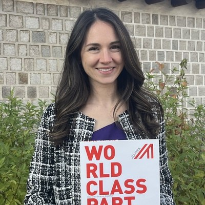
Emma Obenaus, Stellvertreterin
dort
?AuftrittKurzimpuls beim Empfang anfragen
Zehn Minuten zur Robotik-Reise aus österreichischer Sicht.
AnsatzEntscheider ist Köstinger. Am Sonntag beim Abendessen ansprechen, falls bis dahin keine Antwort.
21:0021:450:45 h
TransferOption: Bus zurück zum Hotel
Danach packen — der Bus zum Flughafen fährt 07:15.
Mi 02.12.2026Seoul nach Fukuoka · weiter im Japan-Teil
07:00
fix · AWOCheck-out Shilla Stay
Zimmer vor Ort bezahlen.
07:1508:301:15 h
TransferBus Hotel → Incheon Terminal 2
61 Kilometer, werktags 65 bis 80 Minuten. Korean Air fliegt ab Terminal 2.
Seoul – Incheon
08:3009:501:20 h
Check-inCheck-in KE 791, Incheon Terminal 2
Der Check-in schließt 09:50, 60 Minuten vor Abflug. Danach Ausreise- und Sicherheitskontrolle.
Gebucht am 11.09., 196,27 Euro, nicht stornierbar. Manche Flugportale zeigen 11:05 (Sommerflugplan) — am Vortag in der Korean-Air-App prüfen. Weiter im Japan-Teil →
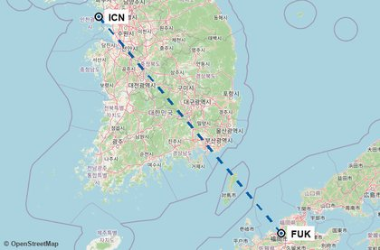
Incheon – Fukuoka
Anhang
AußenwirtschaftsCenter Seoul
Mag. Wolfgang Köstinger, Wirtschaftsdelegierter · Mag. Emma Obenaus, Stellvertreterin